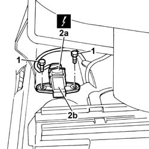

3350E31 SENSOR FOR LONGITUDINAL ACCELERATION (HILL HOLDER) - R.R .
- Path
- Procedures > 33 BRAKING SYSTEM > 3350 DRIVE CONTROL > 3350E VEHICLE DIRECTION CONTROL SYSTEM VDC > 3350E31 SENSOR FOR LONGITUDINAL ACCELERATION (HILL HOLDER) - R.R .
- Kind
- repair procedure (removal / refitting; the operation number is the code)
- Applies to
- all engines; all production periods
- Interactive page
- https://sloeber94.github.io/elrnDB-fPnd/en/#/169001797
Applies to: engines: 1.2 8v, 1.3 JTD 16v; all production periods
 Removing
Removing
 Refitting
RefittingDisconnect the negative battery terminal.
Move the driver's seat completely back and move the floor covering aside.
1. Undo the bolts fixing the sensor.
2. Disconnect the electrical connection (2a) and remove the longitudinal acceleration sensor (2b).
Description | Connector | |
|---|---|---|
2a | Longitudinal acceleration sensor | K013 |

Applies to: engines: 1.2 8v, 1.3 JTD 16v; all production periods
Refitting
RemovingConnect the electrical connection for the lateral acceleration sensor.
Description | Connector | |
|---|---|---|
- | Longitudinal acceleration sensor | K013 |
Tighten the sensor fixing bolts.
Restore the floor covering to its original position and adjust the position of the driver's seat.
Connect the negative battery terminal.